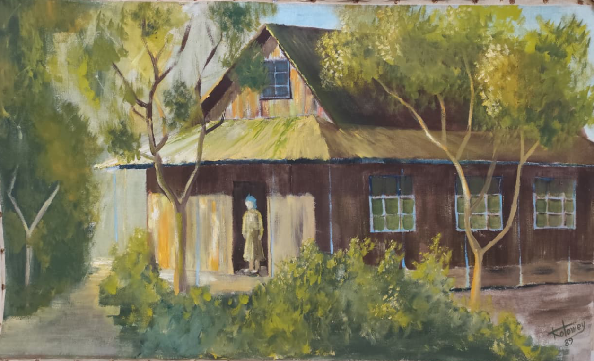
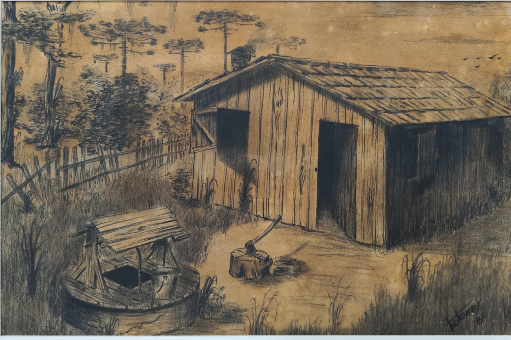
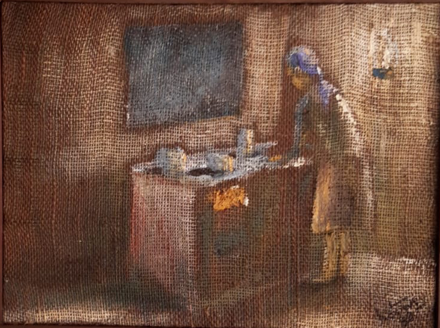
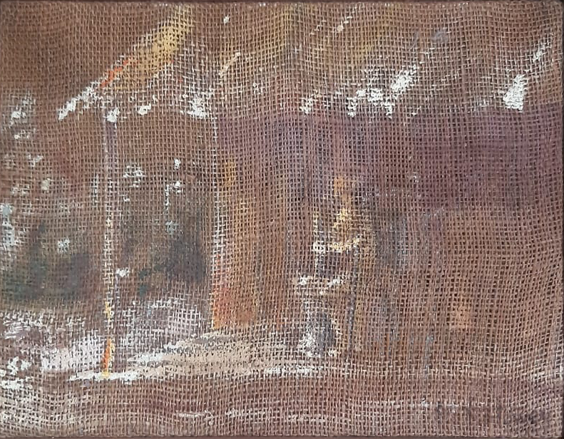
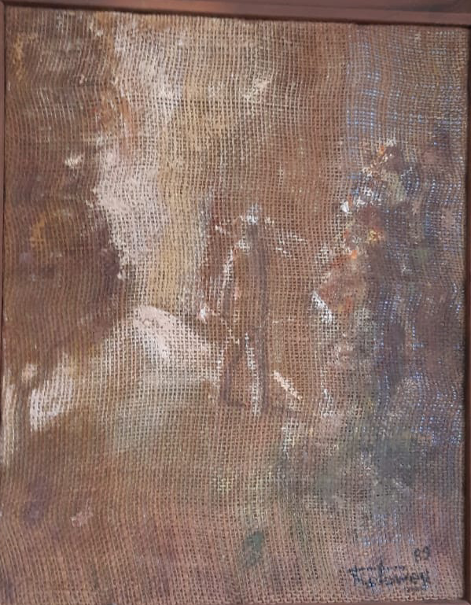
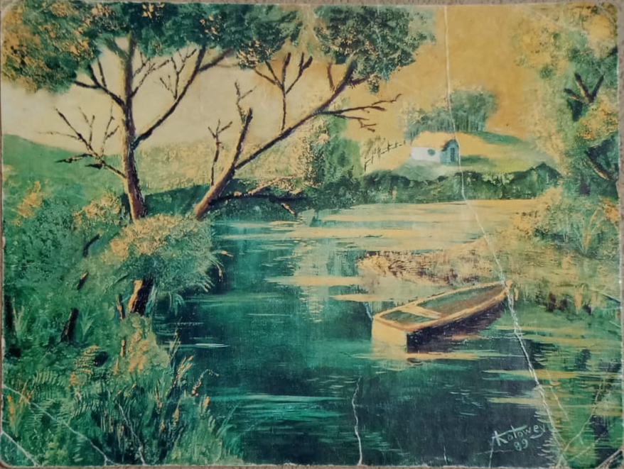

Galeria artística
As obras de Renato Kotowey
Esta seção reúne as pinturas de Renato Kotowey — uma forma de guardar essa memória.






Acervo em digitalização. Se você é da família e tem fotos ou registros de outras obras de Renato — ou informações sobre técnica, título ou data de cada uma —, isso ajuda a completar o acervo. Contato: miguel.kotowey@hotmail.com.